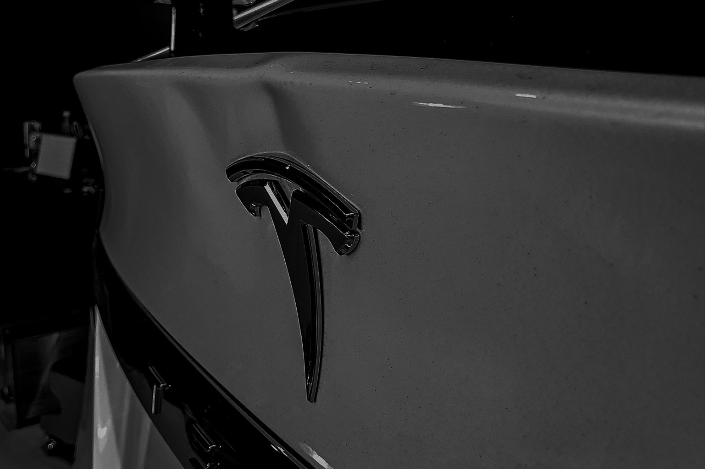
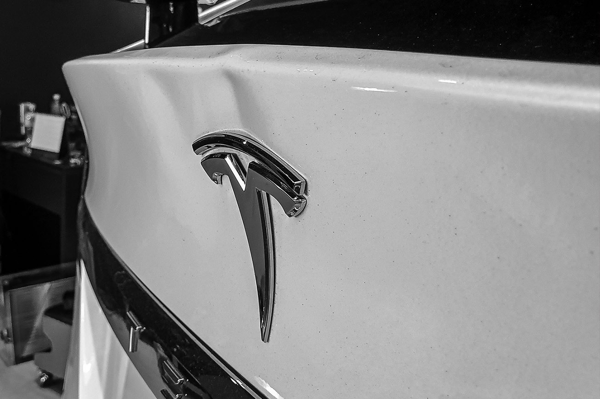
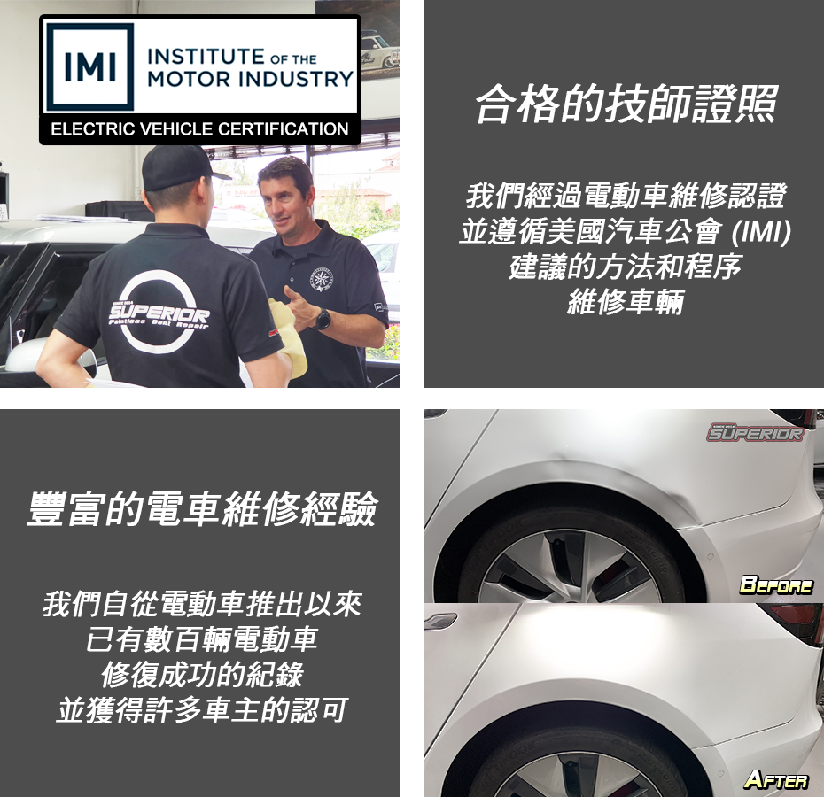
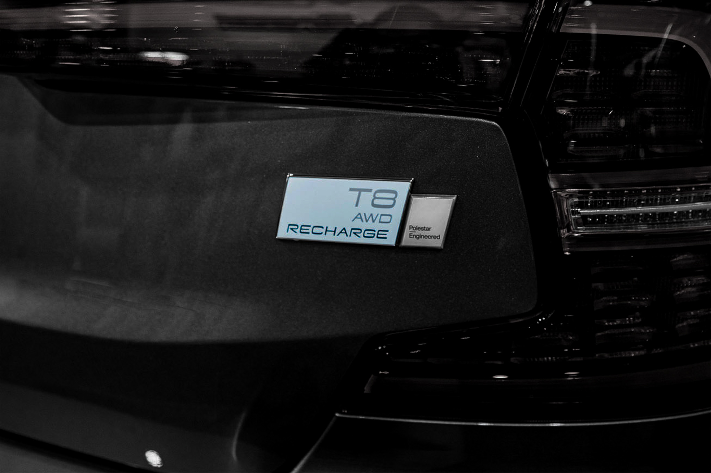
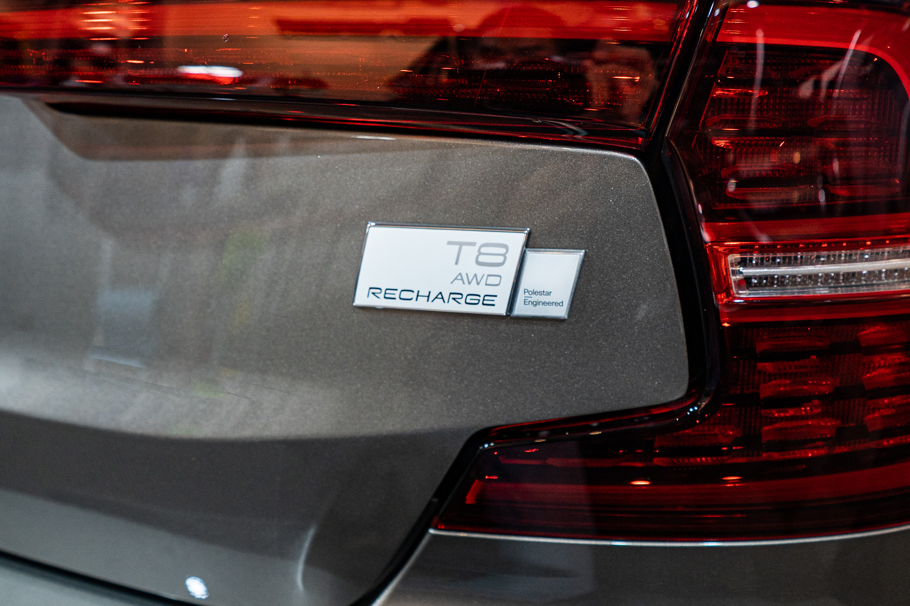
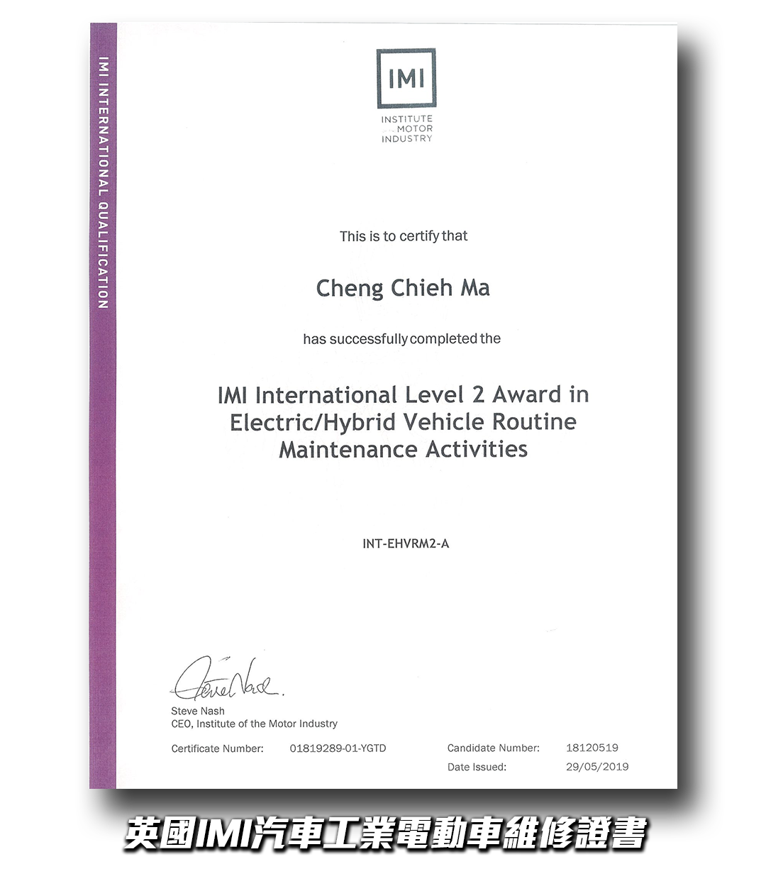

零損傷修復
Tesla PDR · 零損傷四不原則


NO CUTTING 不切板金
NO GRINDING 不研磨
NO WELDING 不焊接
NO REPAINTING 不重新烤漆
Tesla PDR 修復從車身內側以精密推桿將凹痕復原，完全不接觸原廠塗裝，保留 Tesla 的塗裝保固，維持愛車的原廠出廠價值。

台灣唯一 IMI 二級電動車認證 Tesla PDR 技師。Model 3、Model Y、Model S、Model X 鋁合金板件凹痕修復，不烤漆、完整保留原廠塗裝，不影響 Tesla 原廠保固。
卓越技師具備修復所有現行 Tesla 車型的能力，熟悉各車型的板件特性、通道位置與鋁合金施工要領，確保每一次修復都達到最高品質。
Tesla 電動車在設計上與傳統燃油車有根本性的差異，這些差異讓凹痕修復難度大幅提升。選擇一般 PDR 技師修復 Tesla 可能造成漆面受損或施工不完全，請務必確認技師的資歷。
Model S、Model X 採用全鋁車身；Model 3、Model Y 的車頂、引擎蓋、後廂蓋也是鋁合金。鋁合金延展性低、彈性記憶差，推桿力道稍重就可能造成不可逆損傷，需要特殊工具與輕觸多推的技法。
Tesla 高壓電池組電壓達 350–450V，拆卸板件前必須遵循嚴格的斷電程序。未受 IMI 認證的技師貿然施工，存在觸電和系統損壞的風險。
Tesla 原廠塗裝的漆膜厚度通常低於傳統豪華車，對溫度和施力更敏感。任何過熱或粗暴的操作都可能造成橘皮、龜裂或漆面剝落，對技師要求更高。
卓越技師持有英國 IMI（Institute of the Motor Industry）二級電動車維修認證，這是目前台灣極少數能依循國際標準安全施工的電動車 PDR 技師。

卓越遵循 IMI 建議的方法和程序施工，確保修復過程安全且不損傷 Tesla 高壓電系統。自 Tesla 進入台灣市場以來，已成功修復數百輛，並獲得眾多 Tesla 車主的信賴。
選擇 IMI 認證技師修復 Tesla，是對您愛車和自身安全最負責任的決定。
以下為實際 Tesla 客戶車輛修復案例，完整保留原廠烤漆，拖動滑桿對比修復效果。




Tesla PDR 修復從車身內側以精密推桿將凹痕復原，完全不接觸原廠塗裝，保留 Tesla 的塗裝保固，維持愛車的原廠出廠價值。
從免費評估到完工交車，卓越提供透明、安全、可預期的 Tesla PDR 修復流程。
透過 LINE 傳送凹痕照片，技師 24 小時內提供免費評估與參考報價，確認可修復程度。
到店後技師依 IMI 程序確認高壓電系統狀態，確保施工環境安全後才開始作業。
以燈板持續監控修復品質，從車身內側以推桿將凹痕恢復原形，過程全程不接觸漆面。
修復完成後與車主共同驗收，確認凹痕消除、漆面完整無損，留下完工記錄。
以下為卓越修復 Tesla Model 3、Model X 鋁合金板件的真實施工影片。
以下整理了 Tesla 車主最常詢問的 PDR 修復問題，提供完整、正確的資訊。
Tesla 凹痕修復費用依凹痕大小、位置、深度而定。一般小型圓形凹痕（直徑 5cm 以下）約新台幣 2,000–5,000 元；中型凹痕或邊緣位置約 5,000–15,000 元；大型或複雜凹痕需現場評估報價。Tesla 鋁合金板件（車頂、引擎蓋、後廂蓋）因修復難度較高，費用通常較鋼板高 30–50%。建議透過 LINE 傳送照片取得免費估價。
可以，但需要具備 Tesla 鋁合金修復經驗的專業技師。Tesla 大量使用鋁合金車身（Model S、Model X 全鋁車身；Model 3、Model Y 車頂、引擎蓋、後廂蓋為鋁合金），鋁合金的延展性和彈性與鋼板不同，需要專業工具和特殊技法。卓越技師擁有 IMI 二級電動車認證和數百輛 Tesla 的修復經驗，完整保留原廠塗裝。
不會。PDR（無烤漆凹痕修復）技術從車內側以專業推桿將凹痕推平，完全不動到原廠塗裝，因此不會影響 Tesla 的原廠車身保固。相較之下，傳統板金烤漆修復會破壞原廠塗裝，反而可能影響保固效力。選擇 PDR 是 Tesla 車主維護愛車價值的最佳方式。
小型凹痕（直徑 5cm 以下、位於平面區域）通常 1–3 小時；中型凹痕約半天；大面積或複雜位置（折線、邊緣）可能需要 1–2 天。Tesla 因為部分板件需要拆卸才能進入工作空間，施工時間通常比一般燃油車略長 20–30%。卓越提供預約制服務，確保技師有充足時間完成高品質修復。
Tesla Model Y 和 Model 3 的車頂、引擎蓋、後廂蓋採用鋁合金材質，修復時需要輕觸多推的技法和專用鋁合金工具。此外，Tesla 原廠塗裝相對較薄，需要技師具備精準的力道控制能力，避免過推造成反向凸起。卓越建議車主不要選擇沒有 Tesla 鋁合金修復經驗的一般 PDR 技師，避免造成不可逆的損傷。
Tesla 的高壓電池系統電壓達 350–450V，錯誤的拆卸程序存在觸電和短路風險。IMI（英國汽車工業學會）電動車認證確保技師了解高壓電系統的安全操作程序。卓越持有 IMI International Level 2 Award in Electric/Hybrid Vehicle Routine Maintenance Activities，是台灣極少數符合國際安全標準的 Tesla PDR 技師，確保每一次修復都安全合規。
可以。冰雹損傷（Hail Damage）是 PDR 最常見的修復項目之一。Tesla 鋁合金車頂雖然修復難度較高，但卓越具備完整的大面積冰雹損傷修復能力。修復後完整保留原廠塗裝，不影響保固，費用遠低於傳統板金烤漆，且維持 Tesla 的原廠塗裝保值效果。
Tesla Cybertruck 採用約 1.8mm 厚的超硬不鏽鋼（Ultra-Hard 30X Cold-Rolled Stainless Steel），硬度遠超一般鋼板或鋁合金，傳統 PDR 技法效果非常有限。建議攜帶 Cybertruck 到門市進行免費現場評估，技師可準確判斷可修復程度後再決定是否施工。

持有人：Cheng Chieh Ma（馬承傑）
頒發機構：Institute of the Motor Industry（英國汽車工業學會）
認證編號：INT-EHVRM2-A 發證日期：29/05/2019
✓ 台灣極少數 IMI 二級電動車認證 PDR 技師
✓ 數百輛 Tesla 修復成功案例
✓ 不烤漆，保留原廠塗裝與保固
✓ 全台 8 間直營門市，就近服務